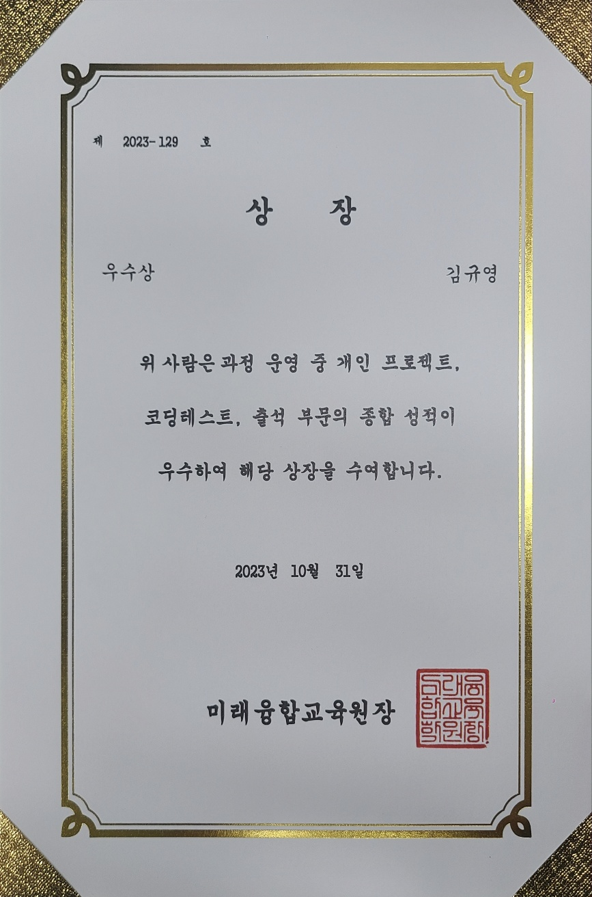

About Me
다양한 역량을 보유한 개발자
열정있는 개발자 김규영입니다.
끊임없는 노력으로 성공을 이루고 긍정적 사고를 가진 개발자가 되고 싶습니다.
강인한 체력과 끈기를 바탕으로 IT 분야에서 지속적인 성장을 이어가고자 합니다.
화합과 소통을 바탕으로 주변에 긍정적인 영향을 끼치는 개발자가 되겠습니다.
- Name: 김 규 영
- Phone: 010-5007-0507
- Email: rlarbdud1998@gmail.com
- Github: https://github.com/kky98
- Address: 대전광역시 중구
Skill
현재까지 배우고 사용 해봤던 기술입니다.
Programming Languages
JAVA
HTML/CSS/JS
JSP
C
Python
SWIFT
MarkDown
Solidity
R
SQL
Framework/Library
Spring/SpringBoot
node.js
JQuery
BootStrap
FLASK
Pandas
numpy
tensorflow
pytorch
Junit
Build Tools
MAVEN
GRADLE
IDEs & Code Editors
Eclipse IDE
Pycharm
IntelliJ IDEA
VSCode
Spyder
STS (Spring Tools 4 for Visual Studio Code)
Code/Data Notebooks
WJupyter Notebook
GoogleColab
Cloud & Services
Amazon AWS
Server & Virtualization
Apache Tomcat
VirtualBox
Version Control
Git / Github
DataBase
Oracle DB
MySQL
SQLite
Operating Systems(OS)
Windows
Linux
Resume
학력, 자격증, 대외활동에 대한 설명입니다.
Education
대전 동산고등학교
2014 - 2017
인문계 대전 동산고등학교 졸업
건양대학교
2017 - 2021
융합IT학과 졸업
- 컴퓨터과학 분야의 다양한 주제를 다루며 프로그래밍 언어, 소프트웨어 공학, 데이터베이스, 알고리즘, 웹 프로그래밍, 네트워크, 운영체제, 빅데이터 분석, 블록체인, 프로젝트 관리, 객체지향 분석 및 설계, 지능형 시스템, 모바일 및 임베디드 프로그래밍과 같은 다양한 IT 분야에 관련된 기술과 지식을 습득했습니다.
- Language:
- Java
- C
- Python - Swift - HTML/JS/CSS - DataBase(DB):
- RDBMS 데이터 모델링 - SQL(Oracle,MySQL) - Project tool:
- Eclipse - Visual Studio - IntelliJ - Jupyter NoteBook - Pycharm
External activities
(계룡건설)빅데이터 기반 Green Tech SW개발자 과정
2023.07.12 ~ 12.26
풀스텍 개발 과정 수강중.ing
- 2050 탄소중립 시나리오에 발맞추어 환경문제와 관련된 소프트웨어 기술 및 풀스택 개발자가 되기위한 기술을 습득했습니다.
- 주요 학습내용:
- 자바 언어의 문법과 기본적인 개념
- 자바프로그램을 활용한 웹 구축 및 운영 경험에 대한 노하우 습득
- JavaServer Pages(JSP)와 Servlet을 이용하여 동적인 웹 페이지 구현
- 빅데이터, 인공지능을 활용한 데이터수집·분석 및 예측 업무기술 습득
· Spring Boot프레임워크 기반으로 한 웹개발 및 운영기술
· 프로젝트를 통한 실전 경험 및 취업에 필요한 결과물 도출
- Language:
- Java
- Python - HTML/JS/CSS - DataBase(DB):
- SQL(Oracle)/SQLite - Project tool :
- Eclipse
- Visual Studio Code
- Git / Github
- STS (Spring Tools 4 for Visual Studio Code) - Server:
- Tomcat - 개인 프로젝트(운동 기록 프로그램)
- 팀 프로젝트(예정)
[학습]
Certificate
SQL 개발자(SQLD)
2022.06.24
정보처리기사 필기 합격
2023.08.00
Awards
육군훈련소 - 최우수 훈련병
2018.09.15
- 내용: 대대별 훈련 부분 종합 점수 1등
* 육군훈련소장표창
미래 융합 교육원 - 우수상
2023.10.31
Project
[Github Link] = 코드주소 / [프로젝트 문서] = 발표자료
- All
- Web
- AI
- Console
[Github Link] [프로젝트 문서]
개인프로젝트 - Exercise_Record
프로젝트 기간 :2023.09.01 ~ 2023.09.22
프로젝트 방식 : Spring MVC
프로젝트 도구 : Eclipse, Spring-tool-suite, OracleDB, Github
사용 기술 : Spring, MVC모델,JQuery, API(네이버,카카오), Bootstrap
사용 언어 : JAVA, JSP, HTML/CSS/JS, SQL
[프로젝트 설명]
Spring Framework를 사용하여 진행한 프로젝트 입니다.
프로젝트 목표: 개인의 운동일지를 작성하고 평가 및 분석하는 프로그램
[기능]
기본적인 기능으로는 기록, 차트, 달력, 게시판으로 구성되어있습니다
기록:비동기통신 (AJAX) 방식을 사용하여 운동유형별 하위 항목을 DB에서 가져와 선택박스의 내용이 바뀌도록 구현했습니다.
차트차트: 기록을 바탕으로 일자별 몸의 변화 그래프와 3대 운동을 시각화 하여 분석할 수 있습니다.
달력:DB에 접근하여 운동 유형별/운동 부위별로 달력에 표시하고 상세내용은 model창으로 확인할 수 있습니다
게시판:기본적인 CRUD기능 및 부가적으로 게시판에 글 등록시 보안 위협인 XSS 공격을 방지하기위해 HtmlEscape라이브러리를 사용하여 보안에
신경썼습니다.
또한 가입시 비밀번호 암호화를 위해 passwordEncoder를 사용하여 암호화 했습니다.
[Github Link] [프로젝트 문서]
팀 프로젝트 - 도로 교통 표지판 분류 및 인식
프로젝트 기간 :2022.11.20 ~ 2022.12.10
기여도 : 50%
프로젝트 방식 : Machine Learning / Deep Learning
사용 프로그램 : Jupyter NoteBook / GoogleColab
사용 언어 : Python
[프로젝트 개요]
이 프로젝트는 교통 표지판 분류 및 인식 기능을 구현함으로써 자율주행 차량의 안전성을 향상시키는 것을 목표로 합니다. KAGGLE에서 제공된 대규모 교통 표지판 데이터셋을 활용,
이미지 처리와 딥러닝 기술을 적용하여 교통 표지판을 식별하고 분류합니다.
[모델 아키텍처]
이 프로젝트에서는 CNN아키텍처를 사용하였습니다. 합성곱 레이어와 풀링 레이어를 적절히 쌓아 모델의 복잡성을 표현하였고, 마지막에는 소프트맥스 함수를 사용하여 각 교통 표지판의
클래스를 예측합니다
[학습 및 평가]
모델은 총 30 에폭(epoch) 동안 학습되었고, 검증 데이터셋을 사용하여 정확도를 평가하였습니다. 최종 모델은 99.5%의 정확도를 달성하여 교통 표지판을 정확하게 분류하고 인식할
수 있음을 확인하였습니다.
[Github Link] [프로젝트 문서]
팀 프로젝트 - 차량 번호판 인식 프로그램
프로젝트 기간 : 2022.10.09 ~ 2022.10.20
기여도 : 50%
프로젝트 방식 : Machine Learning / Deep Learning
사용 프로그램 : Jupyter NoteBook / GoogleColab
사용 언어 : Python
[프로젝트 개요]
이 프로젝트는 차량 번호판의 위치를 찾아내는 프로그램을 개발한 것입니다. 번호판의 정확한 위치를 찾는 것은 후속 처리 단계에서 텍스트 인식 등의 작업을 수행하기 위해 필수적입니다.
프로젝트의 목적은 도로 상에서 차량 번호판의 위치를 자동으로 감지함으로써 교통 관리 및 감시를 효과적으로 돕는 것입니다.
[모델 아키텍처]
이 프로젝트에서는 CNN아키텍처를 사용하였습니다. 합성곱 레이어와 풀링 레이어를 적절히 쌓아 모델의 복잡성을 표현하였고, 이미지 내에서 번호판의 위치를 찾기 위해 여러 레이어를 쌓아
구성되었습니다.
[학습 및 평가]
모델은 수천 개의 이미지를 사용하여 학습되었고, 정답과 예측값을 비교하여 모델의 정확성을 측정하였습니다. 학습 후에는 실제 도로에서 찍은 이미지를 사용하여 모델의 성능을 검증하였고,
90% 이상의 정확도를 달성하여 실제 환경에서도 효과적으로 번호판의 위치를 찾을 수 있음을 확인하였습니다.
이 프로젝트는 차량 번호판을 찾아내는 자동화된 시스템을 제공하여 교통 관리 및 감시를 향상시킬 수 있음을 보여주고 있습니다.
[Github Link] [프로젝트 문서]
개인 프로젝트 - 블록체인 NFT (아이템 거래소)
프로젝트 기간 : 2022.05.17 ~ 2022.06.11
프로젝트 방식 : Web
[사용 언어 및 기술]프론트엔드: HTML, CSS, JavaScript
스마트 컨트랙트: Solidity
블록체인 연동: web3.js, MetaMask
툴: VSCode
기술: 블록체인 기술, NFT 발행 및 거래
[프로젝트 개요]
이 프로젝트는 블록체인 기술을 활용하여 NFT형식의 아이템을 발행하고 거래하는 플랫폼을 개발한 프로젝트입니다. 사용자는 이 플랫폼을 통해 고유한 디지털 자산을 발행하고, 다른
사용자들과 이를 거래할 수 있습니다.
[프로젝트 기능]
NFT 발행: 사용자는 플랫폼을 통해 자신의 고유한 아이템을 NFT로 발행할 수 있습니다.
아이템 거래소: 사용자는 발행한 Item(NFT)을 플랫폼 내 거래소에 등록하고, 다른 사용자들과 거래할 수 있습니다.
지갑 연동: MetaMask 지갑과 연동하여 거래에 필요한 암호화폐를 관리하고 송금할 수 있습니다.
스마트 컨트랙트: Solidity 언어로 스마트 컨트랙트를 작성하여 거래의 투명성과 안전성을 보장합니다.
[Github Link] [프로젝트 문서]
팀 프로젝트 - 콘솔 BANK 프로젝트
프로젝트 기간 : 2022.09.25 ~ 2022.10.15
기여도 : 50%
프로젝트 방식 : Console
프로젝트 도구 : replit
사용 언어 : Swift
[프로젝트 개요]
이 프로젝트는 Swift 언어를 사용하여 개발된 콘솔 기반의 은행 프로그램입니다. 이 프로젝트는 Swift의 기초 문법 및 프로그래밍 개념을 학습하고 응용하기 위해
시작되었습니다.
[프로젝트 기능]
계좌 생성 및 관리: 사용자는 플랫폼을 통해 자신의 고유한 아이템을 NFT로 발행할 수 있습니다.
입출금 기능: 사용자는 발행한 Item(NFT)을 플랫폼 내 거래소에 등록하고, 다른 사용자들과 거래할 수 있습니다.
계좌 조회: MetaMask 지갑과 연동하여 거래에 필요한 암호화폐를 관리하고 송금할 수 있습니다.
[주요 학습 목표]
- Swift 언어의 기본 문법 및 자료구조 활용
- 사용자 입력을 처리하는 방법 습득
- 계좌 객체와 관련한 클래스 및 메서드 정의
- 조건문과 반복문 활용하여 프로그램의 로직 구현
[Github Link]
개인 프로젝트 - 콘솔 가게부 프로젝트
프로젝트 기간 : 2022.09.25 ~ 2022.10.15
프로젝트 방식 : Console
프로젝트 도구 : replit
사용 언어 : Swift
[프로젝트 개요]
이 프로젝트는 Swift 언어를 사용하여 개발된 콘솔 기반의 가계부 프로그램입니다. 이 프로젝트는 사용자가 일일 지출 및 수입을 기록하고 관리할 수 있는 간단한 가계부 시스템을
구현하기 위해 시작되었습니다.
[프로젝트 기능]
지출 및 수입 기록: 사용자는 특정 날짜나 카테고리에 따라 지출과 수입 내역을 조회할 수 있습니다.
총 지출 및 수입 계산: 사용자는 발행한 Item(NFT)을 플랫폼 내 거래소에 등록하고, 다른 사용자들과 거래할 수 있습니다.
계좌 조회:입력된 내역들을 기반으로 총 지출과 수입을 계산하고 출력할 수 있습니다.
[주요 학습 목표]
- Swift 언어의 배열과 딕셔너리를 활용한 데이터 관리
- 사용자로부터 입력을 받고 처리하는 방법 습득
- 함수를 사용하여 프로그램을 모듈화하고 코드를 구조화하는 방법을 익힘
- 기본적인 가계부 알고리즘을 이해하고 구현
[Github Link] [프로젝트 문서]
팀 프로젝트 - JSP 웹 프로그래밍 (perfumeShop)
프로젝트 기간 :2023.09.01 ~ 2023.09.22
기여도 : 40%
프로젝트 방식 : Web
프로젝트 도구 : Eclipse, Spring-tool-suite, OracleDB, Github
사용 기술 : MVC모델,JQuery, Bootstrap
사용 언어 : JAVA, JSP, HTML/CSS/JS, SQL
[프로젝트 개요]
이 프로젝트는 JSP 웹 프로그래밍 기술을 활용하여 온라인 향수 쇼핑몰인 "PerfumeShop"을 개발한 것입니다. 사용자에게 향수 제품을 검색하고 주문할 수 있는 기능을
제공합니다. 또한, 관리자에게는 향수 등록,삭제,수정기능을 제공합니다.
[프로젝트 기능]
제품 목록 및 상세 정보: 사용자는 향수 제품 목록을 볼 수 있고, 제품을 선택하면 해당 제품의 상세 정보를 확인할 수 있습니다.
장바구니 기능: 사용자는 제품을 장바구니에 담아 나중에 주문할 수 있습니다.
주문 및 결제:사용자는 선택한 제품을 주문하고 결제할 수 있습니다.
사용자 관리:사용자는 계정을 생성하고 로그인하여 주문 이력을 확인할 수 있습니다.
리뷰 기능:사용자는 상품에 대한 리뷰를 작성하고, 다른 사용자들의 리뷰를 읽을 수 있습니다.